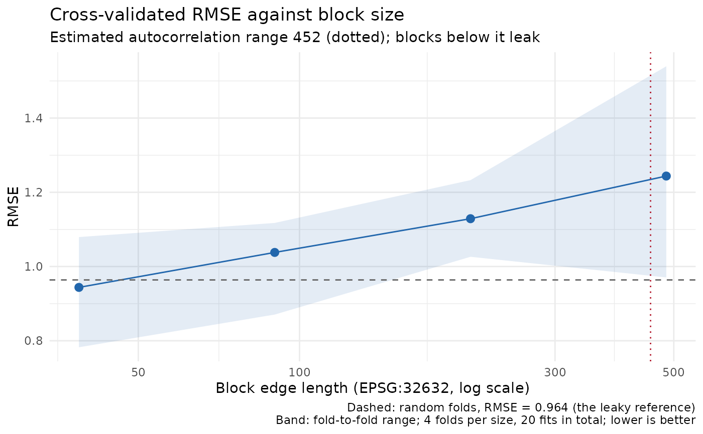

A blocked cross-validation with blocks smaller than the autocorrelation
range leaks: every held-out point has a near-identical neighbour in the
training set, and the score is optimistic in proportion. The single
number a cv_*() call returns cannot show this. This runs the same
cross-validation at a ladder of block sizes, and by default once with
random folds as the fully leaky reference. It returns the metric at each,
with the estimated autocorrelation range alongside so that the curve can be
read against it: it rises as the blocks pass the range and then plateaus,
and the height of the rise is how much the random-fold number overstated
the model.
Usage
cv_block_size_sweep(
data_sf,
response_var,
predictor_vars,
fit_fn,
block_sizes = NULL,
n_sizes = 6L,
k = 5L,
metric = "RMSE",
include_random = TRUE,
max_fits = 60L,
sac = NULL,
seed = 123L,
quiet = FALSE,
...
)Arguments
- data_sf
An sf object with the response and predictors.
- response_var, predictor_vars
Column names.
- fit_fn
A
function(train_sf)returning aspatial_fit, as forcv_spatial(); see the example for wrapping a built-in backend.- block_sizes
Optional numeric vector of block edge lengths to sweep, in the CRS units the folds are built in. Default
NULL: the ladder described above.- n_sizes
Number of sizes in the default ladder. Default 6.
- k
Folds per cross-validation. Default 5.
- metric
Which column of
overallto read. Default"RMSE".- include_random
Also cross-validate with random folds, as the leaky reference. Default
TRUE.- max_fits
The fit budget; see above. Default 60.
- sac
Optional
sac_rangefromestimate_sac_range()to mark on the curve. DefaultNULL: estimated here from the response, detrended onpredictor_vars, when gstat is installed.- seed
Seed for the fold construction at every size.
- quiet
Suppress the progress messages. Default
FALSE.- ...
Passed to
cv_spatial()at every size (predict_args,p,parallel,metrics, ...).block_size,folds,k,seedandauto_rangeare set here and cannot be passed.
Value
A data.frame of class "block_size_sweep" with one row per
cross-validation: block_size (NA for the random
reference), method, blocks_used, k (the folds
actually built), n_folds_succeeded, value (the pooled
metric), fold_min, fold_max and fold_sd (its spread
across folds). Attributes: metric, sac_range (the
effective range, or NA), crs, n_fits, and
results, the full cv_spatial() result at every size.
plot() draws it.
The fit budget
Each block size is a full cross-validation, so the cost is
length(block_sizes) * k fits, plus k for the random
reference. max_fits caps that (default 60: six sizes at
k = 5, plus the reference). A sweep that would run past the cap
refuses to start, naming the number of fits it would have needed. Raise
max_fits deliberately; the RF example below takes seconds, a Bayesian
fit_fn takes minutes per fit.
The ladder
When block_sizes is NULL, n_sizes values are
log-spaced from a twenty-fifth to a half of the shorter side of the
data's extent, and any size at which the grid would hold fewer than
k blocks is dropped, so every point on the curve is a k-fold
cross-validation of the same shape. Sizes are in the units of the CRS the
folds are built in (make_folds()'s params$crs, metres for
geographic input), and the returned table records that CRS.
See also
Other cross-validation:
area_of_applicability(),
cv_bayes(),
cv_gwr(),
cv_rf(),
cv_spatial(),
estimate_sac_range(),
gwr_model_selection(),
make_folds(),
sac_nugget(),
select_features_forward()
Examples
if (requireNamespace("ranger", quietly = TRUE) &&
requireNamespace("gstat", quietly = TRUE)) {
library(sf)
set.seed(1)
n <- 200
x <- 5e5 + runif(n, 0, 1000); y <- 5e6 + runif(n, 0, 1000)
d <- as.matrix(dist(cbind(x, y)))
field <- as.numeric(t(chol(exp(-d / 100) + diag(1e-6, n))) %*% rnorm(n))
dat <- st_as_sf(data.frame(x = x, y = y, a = rnorm(n)), coords = c("x", "y"),
crs = 32632)
dat$z <- field + 0.5 * dat$a + rnorm(n, 0, 0.2)
rf_fn <- function(train_sf)
fit_rf_model(train_sf, "z", "a", include_coords = TRUE, num_trees = 100, seed = 1)
sw <- cv_block_size_sweep(dat, "z", "a", fit_fn = rf_fn, k = 4, n_sizes = 4,
quiet = TRUE)
print(sw) # the curve as a table, with the random-fold reference
if (requireNamespace("ggplot2", quietly = TRUE)) plot(sw)
}
#> Cross-validation RMSE against block size (20 fits, k = 4, sizes in EPSG:32632)
#> estimated autocorrelation range: 452.5
#> block_size method blocks_used k n_folds_succeeded value fold_min
#> random random_kfold NA 4 4 0.9639 0.8346
#> 38.73 block_kfold 172 4 4 0.9438 0.7825
#> 89.89 block_kfold 87 4 4 1.0380 0.8706
#> 208.60 block_kfold 16 4 4 1.1289 1.0262
#> 484.10 block_kfold 4 4 4 1.2438 0.9707
#> fold_max
#> 1.146
#> 1.079
#> 1.117
#> 1.233
#> 1.540
